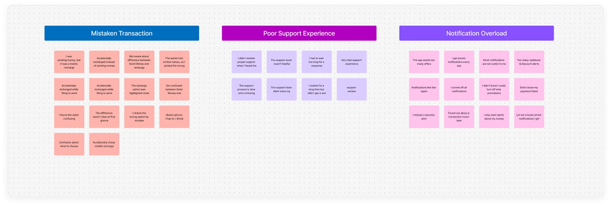
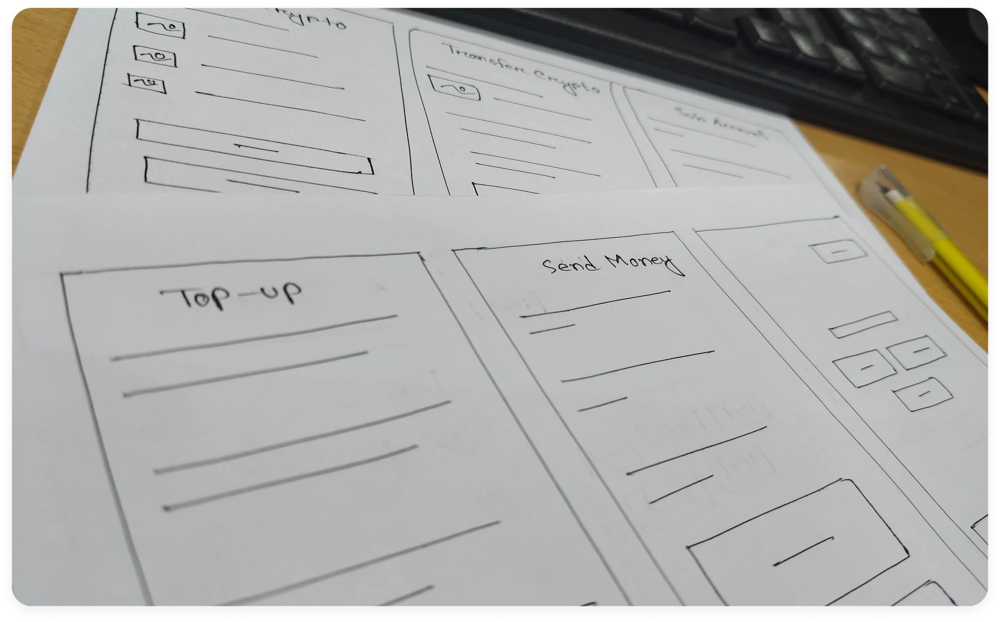
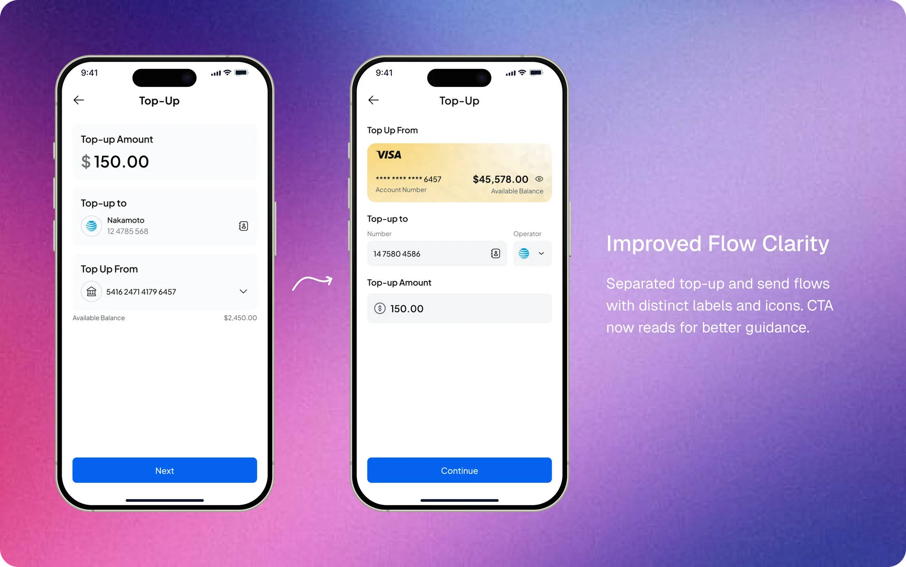
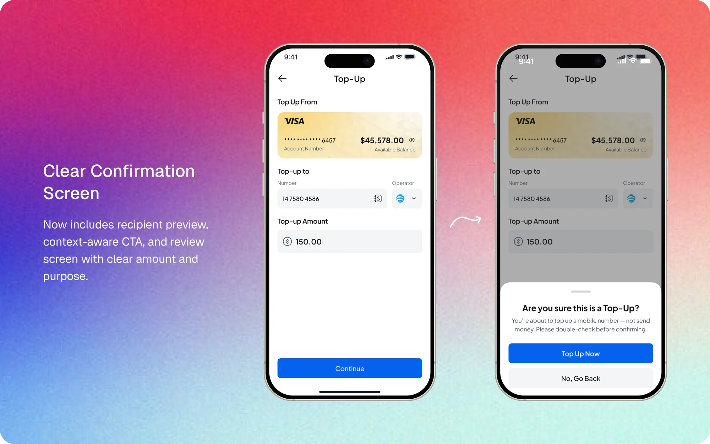

Project Overview
In my work with a fintech app, I identified key challenges that were hampering user experience and satisfaction. Users were struggling with common issues, such as sending money to incorrect recipients, unintentionally disabling critical notifications, and facing difficulty accessing timely support. The goal was to enhance the app’s functionality by addressing these pain points and making it easier for users to manage their finances efficiently and accurately.
The Problem
The app did the basics, but three everyday moments kept breaking users' trust:
On top of fixing these, the business wanted to explore new features for future growth. So the question became: how do we make every money action feel safe without slowing people down?
Where it Fits
Most people use a finance app for a handful of quick, high-stakes tasks: send, top up, check a balance, get help. When those tasks feel risky, users stop trusting the app with anything bigger.
The redesign keeps those core flows at the center and adds three things users asked for: AI-assisted support, business sub-accounts, and linking external wallets.
I thought I was sending money, but it recharged someone's phone instead. I couldn't undo it. I lost that money.Sam C., interview participant
Research
I analyzed existing user feedback and interviewed key users to uncover trust gaps and validate new feature needs. Interviews used laddering to dig past surface-level complaints into the real needs underneath: trust, control and financial confidence.
users disable all app notifications after receiving too many irrelevant promotions, missing key alerts.
Small business owners mix personal and business transactions, leading to confusion and lack of financial.
Users mistakenly use the Mobile Recharge flow instead of Send Money, often due to screen similarity.
Active users want the ability to transfer funds to external accounts like PayPal, not just store money in app.
User interviews
We interviewed users across key segments and used laddering to dig deeper into issues. This revealed core needs around trust, control, and financial confidence beyond surface-level problems.
I thought I was sending money — but it recharged someone’s phone instead. I couldn’t undo it. I lost that money.
The app sends too many offers. I turned off notifications and then missed a money request from my sister.
When something goes wrong, support is impossible to reach. I had to wait hours just to ask about a failed transaction.
Affinity diagram
We sorted and categorized user insights to uncover common pain points. From this, a clear story emerged — users seek control, clarity, and trust in managing their finances.

Competitor Analysis
To inform our design direction, we performed a competitor analysis to uncover what similar fintech apps offer — and more importantly, what they don’t. This helped us identify gaps in the market and transform them into opportunities for differentiation and added user value.
Brainstorming
We turned user insights into HMWs to guide ideation, then explored three ideas: clearer transactions, smarter notifications, and better multi-account control

Key Iteration
Top Up and Send Money: two flows that can't be confused
Testing showed the flows still looked alike. I separated them with distinct labels, icons and card colors, rewrote the CTA to guide the next step, and added a confirmation sheet that asks "Are you sure this is a Top-Up?" before any money moves.

The result: fewer user errors and accidental actions.

The result: faster tasks and a higher success rate.
Outcome
We evaluated the updated product with five participants using moderated testing and SUS surveys to assess the impact of our design decisions. The results showed noticeable improvements in both usability and user confidence.